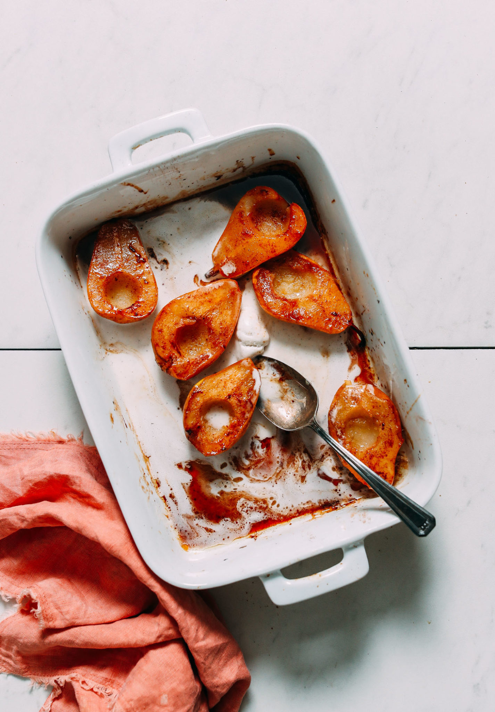

Easy Baked Pears

Description
Easy baked pears made in one dish with simple ingredients. Serve with vanilla yogurt or ice cream for the ultimate elegant dessert perfect for the holidays and beyond. Just 30 minutes and 1 pan required.
Ingredients
- 4 small to medium pears, just ripe
- 2 teaspoons melted coconut or avocado oil
- 3-4 tablespoons coconut sugar/li>
- 2 tablespoons maple syrup
- 1/2 teaspoon ground cinnamon
- 1/8 teaspoon nutmeg
- 1/4 teaspoon ground ginger
- 1 tablespoon apple cider vinegar
- 2 tablespoons lemon juice
Steps
- Preheat oven to 350 degrees F (176 C) and set out a 9×13-inch (or similar size) baking dish.
- Halve pears and remove and core with a small spoon or measuring spoon. Leave stem on for a more elegant presentation (optional). Place cut-side up in your baking dish.
- Top evenly with oil, coconut sugar, maple syrup, cinnamon, nutmeg, ginger, apple cider vinegar, and lemon juice.
- Flip pears cut-side down and bake for 20-30 minutes (uncovered) or until tender (a knife inserted should easily slide out – bake longer as needed for larger / firmer pears). Then carefully remove from oven, flip cut-side up, and bake for an additional 5 minutes to slightly caramelized the tops.
- Enjoy as is or with vanilla coconut yogurt (we love Culina), Coconut Whipped Cream, or Vanilla Bean Coconut Ice Cream! Drizzle with the remaining "caramel sauce" left over in the pan for extra flavor and decadence.
- Best when fresh, though leftovers keep covered in the refrigerator up to 2-3 days. Reheat in the microwave or in a 350-degree F (176 C) oven until warmed through. Not freezer friendly.